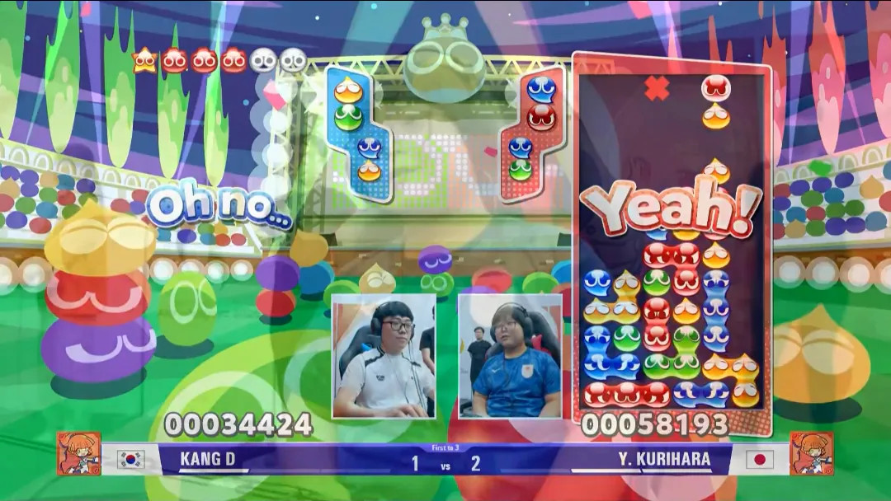
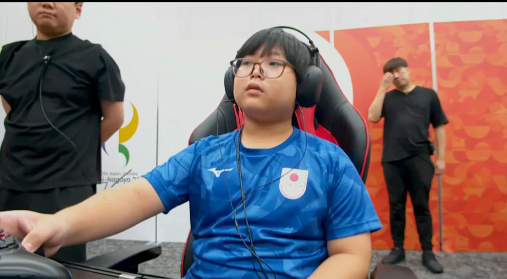

3대1로 잼민이가 압승함 ㅋㅋ


3대1로 잼민이가 압승함 ㅋㅋ
와 이거 궁금했는데 ㅋㅋㅋㅋㅋ 군대… 가야것제?
잼민이 잘하네 ㅋㅋ
아직 현역병 대상 아니라서 면제 아니지않음??
이미 전역했다든데
위에 공격 쌓인거 보니까 빠요엔 당했네ㅋㅋㅋ
빠요엔~
뿌요뿌요는 진짜 어떻게 하는지 개신기함
어린이 노인 여자를 조심하라 했거늘......
이제 예선 끝났는데..?
2회차인거 아님? ㄷㄷ 매일 1시간씩밖에 안했는데 11살에 프로를 다 꺾고 1등을 거머쥐네
부요부요를 일본은 못이기지
결승이 아님
군대 가는게 맞다